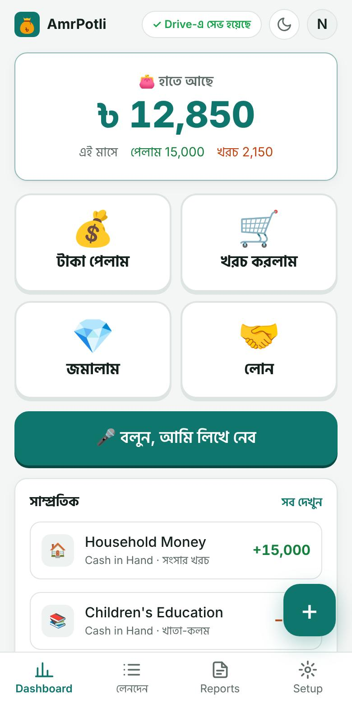
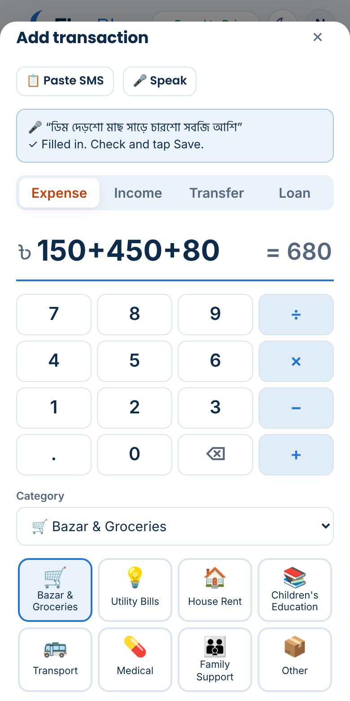
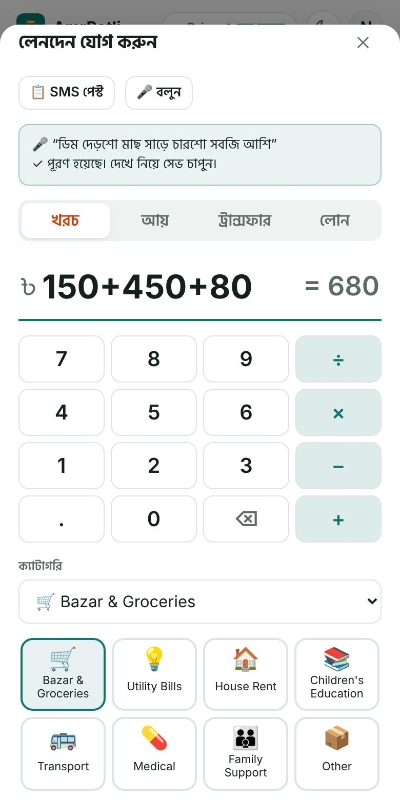
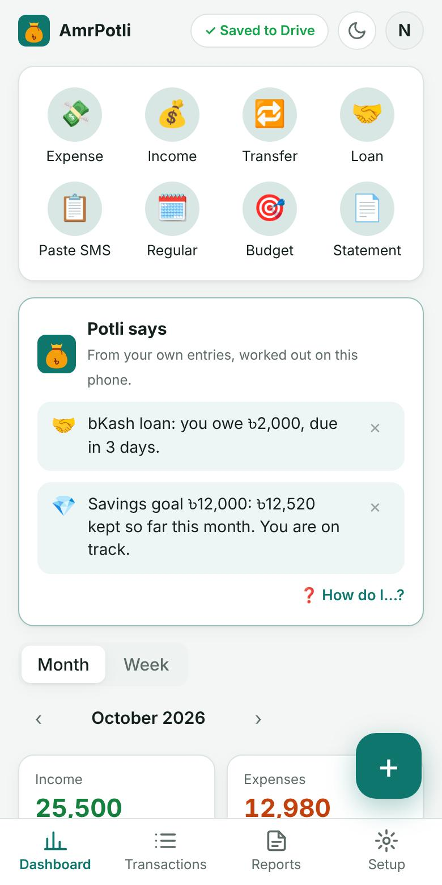
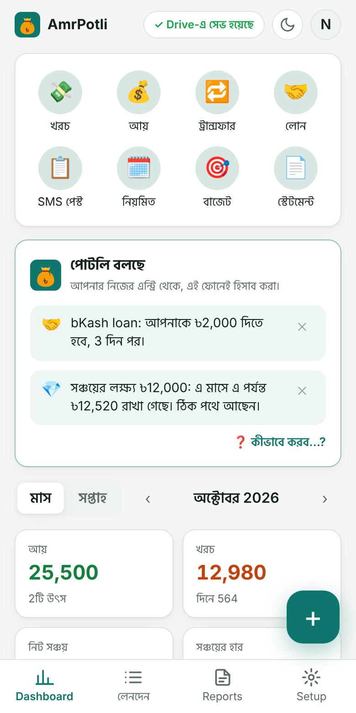
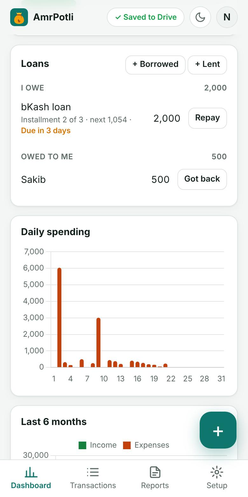
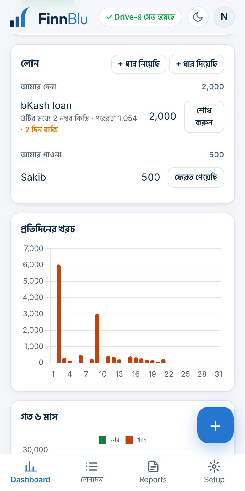
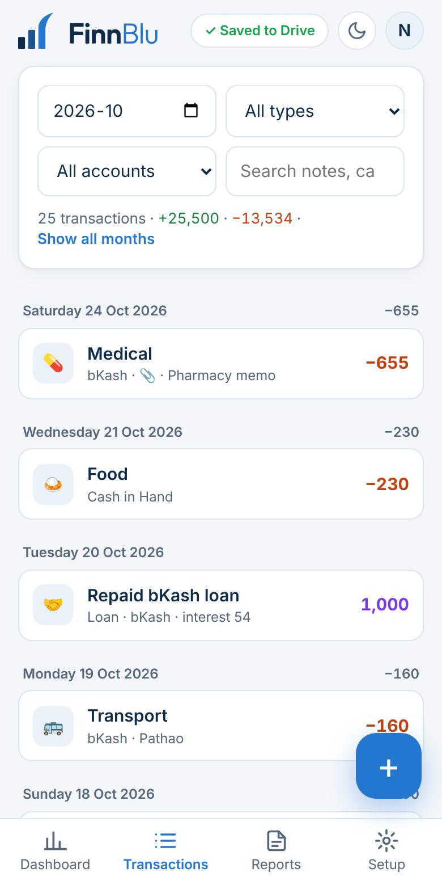
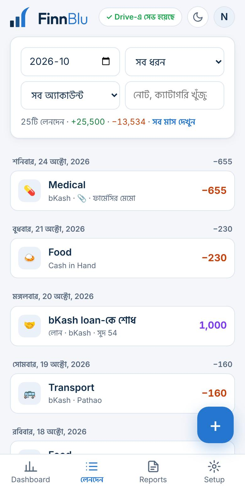

Made for our mothers, who keep a whole family's money in their head. Big buttons, few words, and you can simply say what you spent.আমাদের মায়েদের জন্য বানানো, যাঁরা পুরো পরিবারের টাকার হিসাব মাথায় রাখেন। বড় বোতাম, কম লেখা, আর খরচটা শুধু মুখে বললেই হয়।
When you choose “Running a home” at the start, AmrPotli opens with a simple screen:শুরুতে “সংসার চালাই” বেছে নিলে আমার পোটলি সহজ স্ক্রিনে খোলে:
Want charts and budgets? Tap More details; a button brings you back.চার্ট আর বাজেট দেখতে চান? “আরও বিস্তারিত” চাপুন; বোতামে আবার ফিরে আসবেন।

Tap and speak normally, the way you would tell someone at home: চেপে স্বাভাবিকভাবে বলুন, যেভাবে বাড়ির কাউকে বলেন:
Check it and tap Save. Words like দেড়শো, আড়াইশো, সাড়ে, হাজার and লাখ are understood. Saying “পেলাম” or “বেতন” makes it money received.দেখে সেভ চাপুন। দেড়শো, আড়াইশো, সাড়ে, হাজার, লাখ এসব কথা বোঝে। “পেলাম” বা “বেতন” বললে সেটা টাকা পাওয়া হিসেবে ধরে।


When your husband, son or daughter gives you money for the month, tap Got money and choose Household Money. If they send it by bKash, paste the bKash SMS: it fills itself.স্বামী, ছেলে বা মেয়ে মাসের খরচের টাকা দিলে টাকা পেলাম চেপে Household Money বেছে নিন। বিকাশে পাঠালে বিকাশের SMS পেস্ট করুন: নিজেই বসে যাবে।
There is no fixed amount to set: write what you got, when you got it. “Money in hand” always shows what is left.নির্দিষ্ট কোনো অঙ্ক ঠিক করতে হয় না: যখন যা পান তা-ই লিখুন। “হাতে আছে” সবসময় দেখায় কত বাকি।


Kept ৳500 aside in the tin, or paid the DPS? Tap Saved. The money moves to your savings and is not counted as spent; the top of the screen shows how much is saved.৳৫০০ কৌটায় রাখলেন, বা ডিপিএস দিলেন? জমালাম চাপুন। টাকাটা সঞ্চয়ে যায়, খরচ হিসেবে ধরা হয় না; স্ক্রিনের ওপরে কত জমল দেখায়।
Lent to a neighbour or borrowed from a relative? Loan keeps track until it is paid back.প্রতিবেশীকে ধার দিলেন বা আত্মীয়ের কাছে নিলেন? লোন শোধ না হওয়া পর্যন্ত মনে রাখে।


Sometimes you will add the bazar yourself, sometimes your son or daughter will. Both phones simply sign in with the same Google account: anything added on one phone appears on the other.কখনো বাজারের হিসাব আপনি নিজে লিখবেন, কখনো ছেলে বা মেয়ে। দুই ফোনেই একই Google অ্যাকাউন্টে সাইন ইন করলেই হবে: এক ফোনে লিখলে অন্য ফোনেও দেখা যাবে।
Made a mistake? Open the entry and fix it, or delete it. Deleted the wrong one? Tap “Undo” at the bottom right away.ভুল হয়েছে? এন্ট্রি খুলে ঠিক করুন, বা মুছে দিন। ভুলটা মুছে ফেলেছেন? সাথে সাথে নিচের “ফিরিয়ে আনুন” চাপুন।


Yes. With Bangla turned on, everything she taps is in Bangla with a picture on each button, and she can speak instead of typing.হ্যাঁ। বাংলা চালু করলে যা চাপবেন সব বাংলায়, প্রতিটি বোতামে ছবি, আর লেখার বদলে মুখে বলতে পারবেন।
Yes, the phone's speech service needs internet. Without it, type the amount on the number pad as usual.হ্যাঁ, ফোনের ভয়েস সার্ভিসের জন্য ইন্টারনেট লাগে। না থাকলে নম্বর প্যাডে লিখে দিন।
No. The phone turns the words into text; AmrPotli receives only the text and keeps no recording. Nothing is heard unless is tapped.না। ফোন কথাগুলোকে লেখায় বদলায়; আমার পোটলি শুধু লেখাটা পায়, কোনো রেকর্ডিং রাখে না। না চাপলে কিছুই শোনে না।